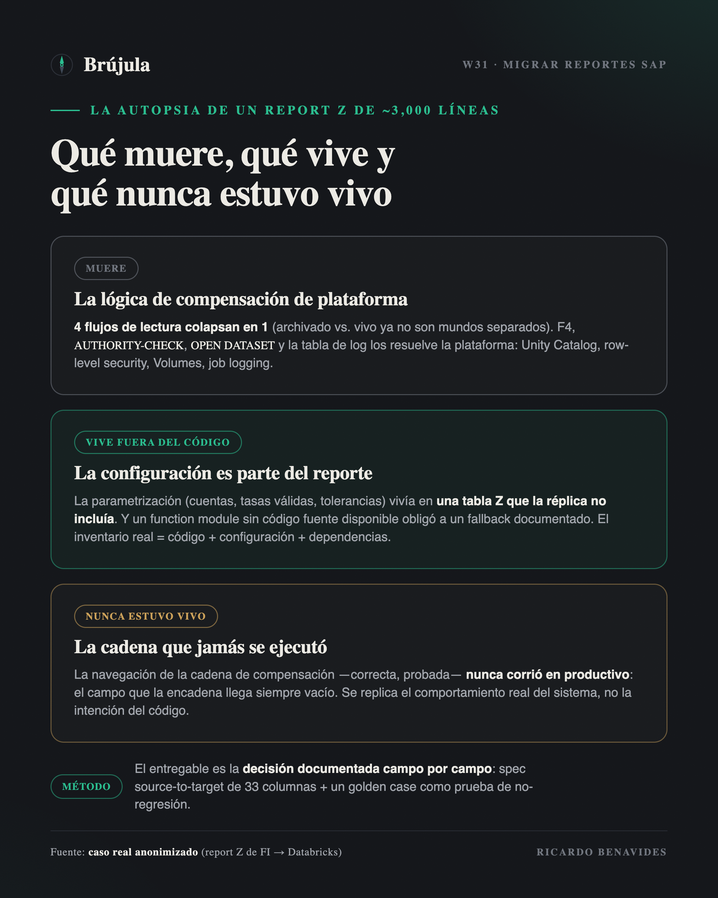
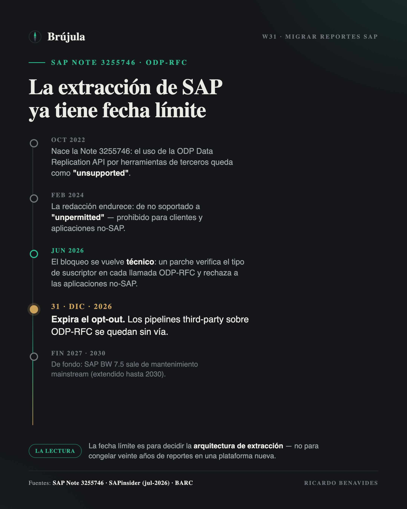

Hay una promesa que se repite en cada propuesta de modernización: "migramos tus reportes SAP al lakehouse". Suena a traducción — ABAP entra, SQL o PySpark sale, y el número que el negocio ya conoce aparece ahora en un dashboard. Este año la decisión dejó de ser opcional para muchos: SAP BW 7.5 sale de mantenimiento mainstream a fines de 2027, y desde junio de 2026 SAP bloquea técnicamente la extracción ODP-RFC de aplicaciones no-SAP — con un opt-out que expira el 31 de diciembre. Miles de organizaciones están decidiendo este año qué se lleva al lakehouse y por dónde.
Yo acabo de pasar por eso con un reporte concreto: un report Z de FI, productivo desde hace años, que produce el facturado mensual con su IVA por documento — comprobante fiscal incluido, cliente, tasas, estatus de compensación. Casi tres mil líneas de ABAP, la enorme mayoría en FORMs. El destino: una tabla Delta en Databricks, consumida desde Power BI. Y no se quedó en piloto: el modelo ya está generado y hoy cuadra los ejercicios 2025 y 2026 contra el sistema origen.
La lección más honesta que puedo compartir es esta: migrar ese reporte no fue traducirlo. Fue hacerle una autopsia. Y lo que encontramos adentro cambia la manera en que conviene planear cualquier migración de reportes SAP — estándar o Z — hacia Databricks, Snowflake o el destino que sea.
El entregable de una migración de reporte no es "el mismo reporte en otra plataforma". Es la decisión explícita, documentada, de qué lógica vive, qué lógica muere y qué lógica nunca estuvo viva.
Dead code walking: la lógica que existe por limitaciones que ya no tienes
Lo primero que apareció al abrir el reporte: cuatro flujos de lectura distintos — documentos archivados contra documentos vivos, cruzados con facturación contra no-facturación. Cuatro caminos de código, cada uno con sus FORMs, sus estructuras intermedias y sus casos especiales.
¿Por qué existen? Porque en el sistema origen los datos archivados y los vivos se leen por mecanismos diferentes, y el autor original no tuvo más remedio que tratarlos como mundos separados. En el lakehouse esa limitación no existe: una vez que ambos conjuntos aterrizan en tablas, la unión es un UNION y los cuatro flujos colapsan en uno (más un flujo aparte para movimientos extraordinarios, que sí es una distinción de negocio real). Media docena de FORMs desaparecieron, no porque los optimizamos, sino porque el problema que resolvían ya no existe.
Y no fueron los únicos funerales. La ayuda de búsqueda F4 no tiene equivalente ni falta que hace. El AUTHORITY-CHECK por sociedad se vuelve gobierno de plataforma: Unity Catalog y seguridad row-level, declarada una vez, no programada en cada reporte. El OPEN DATASET que escribía un CSV al servidor de aplicación se vuelve un write a un Volume. La tabla Z de log de ejecuciones se vuelve el logging del job. Nada de eso se migra: se deja morir con dignidad, y se levanta el acta de defunción.
Este es el primer hallazgo de método: antes de estimar una migración de reportes, separa la lógica de negocio de la lógica de compensación — el código que solo existe para esquivar limitaciones de la plataforma vieja. En nuestro caso, una fracción muy grande de esas tres mil líneas era compensación pura. Quien cotiza la migración por líneas de código está cotizando la mudanza de muebles que van directo a la basura.
La lógica que no está en el código
La sorpresa opuesta fue más incómoda: una parte central del comportamiento del reporte no estaba en el ABAP. Estaba en filas.
El reporte lee su parametrización de una tabla Z de configuración: qué cuentas de IVA trasladado y retenido considerar, qué tasas son válidas, qué clases de documento entran, niveles de compensación, tolerancias. Todo eso son datos, no código — y la réplica hacia el lakehouse no incluía esa tabla. El programa podía traducirse completo y aun así no calcular nada correcto, porque su cerebro estaba en otra parte. La solución de corto plazo fue exportar la configuración y embeberla como fallback versionado en el pipeline; la de largo plazo es tratarla como lo que es: una tabla maestra más que debe replicarse y gobernarse.
Peor todavía: el reporte llama un function module Z que deriva la clave de producto/servicio para el comprobante fiscal — y su código fuente ya no se pudo obtener. No hay traducción posible de un programa que nadie puede leer. La decisión fue un fallback documentado (la descripción de material de MAKT como aproximación) con el hueco marcado, visible, esperando la definición funcional. Otra rutina — la que determina el porcentaje de impuesto — se reconstruyó desde las tablas estándar (KONP con T007A), que es de donde el dato siempre debió salir.
Si diriges una migración, este es el segundo hallazgo: el inventario de un reporte no es su código; es su código más su configuración más sus dependencias. Tablas Z de parametrización, function modules compartidos, variantes de ejecución. El código te lo da un extractor; el inventario completo solo te lo da la autopsia.
Replicar el comportamiento, no la intención
El hallazgo que más me hizo pensar fue uno que parecía menor. El reporte incluye lógica para navegar la cadena de compensación de un documento — seguir el rastro de pagos y compensaciones parciales, iterativamente, hasta cerrar el ciclo. En Spark eso serían self-joins recursivos: caros y delicados. Nos preparamos para la batalla.
Y entonces miramos los datos productivos: el campo que encadena la navegación llegaba siempre vacío. Por cómo está configurado el sistema, esa lógica —correcta, bien escrita, probada— nunca se había ejecutado. El reporte llevaba años produciendo cifras válidas sin rastrear ninguna cadena.
Ahí hay una decisión de arquitectura disfrazada de detalle: ¿replicas lo que el código intenta hacer, o lo que el sistema realmente hace? Nosotros elegimos replicar el comportamiento real y dejar la divergencia asentada por escrito. Migrar la intención habría sido construir —y pagar, y mantener— una pieza de complejidad que producción jamás usó. Este patrón se repite en versiones menores por todo el código: el operador CP de un rango SAP que en la práctica es un LIKE; las estructuras de rangos SIGN/OPTION/LOW/HIGH que no tienen equivalente natural en SQL y que casi siempre se usan como un simple IN o un BETWEEN. Cada una exige la misma pregunta: ¿fidelidad al código, o fidelidad al sistema?

La spec es el contrato, el golden case es el seguro
Nada de lo anterior se sostiene sin método, y aquí conecto con algo que escribí hace unas semanas: el diseño es la migración. Para este reporte, el diseño tomó la forma de una especificación source-to-target de 33 columnas: por cada campo de salida, su origen exacto (tabla, campo, transformación, regla de negocio, comportamiento ante nulos), decidido antes de escribir el pipeline. Cada funeral del que hablé arriba está asentado ahí — qué se replica, qué se simplifica, qué muere y por qué.
Y la implementación se protegió con una disciplina que le recomiendo a cualquier equipo: desarrollo guiado por pruebas con un golden case. Un caso real, verificado a mano contra el sistema origen, con su resultado esperado fijado como prueba de no-regresión. Cada refactor del pipeline corre contra ese número. Si algún día no cuadra, el pipeline no pasa. En dominio fiscal esto no es perfeccionismo: es la diferencia entre "el job corrió en verde" y "el número es defendible frente a una auditoría".
Protiviti estimó este año que salir de BW hacia una plataforma no-SAP demanda tres a cuatro veces más esfuerzo que quedarse en las rutas SAP — y señala exactamente dónde: preservar la lógica de negocio compleja. Mi experiencia dice que esa estimación es creíble, pero con un matiz importante: el esfuerzo no se va en traducir lógica. Se va en descubrir cuál lógica es de negocio, cuál es compensación de plataforma y cuál está en configuración — la autopsia. La traducción, con la spec cerrada, es la parte rápida.
Un dato más, por si piensas que exagero con lo de la autopsia: la guía oficial no existe. Los dueños de plataforma — Databricks, Snowflake, Microsoft, AWS, Google — documentan con detalle la capa de datos (extracción, CDC, zero-copy), pero ninguno publica cómo traducir la lógica de un reporte Z a SQL o PySpark. Lo más cercano, el Cortex Framework de Google, sustituye el reporting estándar con views predefinidas — y deja lo custom para reescritura manual. El único vendor que hoy documenta migración de lógica ABAP es SAP mismo: una serie de 2026 sobre migración asistida por IA de BW 7.5 a Business Data Cloud, que cubre solo rutinas y transformaciones de BW, y solo hacia su propio destino. Si vas hacia un lakehouse de terceros, la autopsia no viene con manual: el método lo pones tú.
IEPS por material: cuando la granularidad decide la verdad
El mismo proyecto incluía un reto mayor que migrar lo existente: construir un desglose que SAP no daba de fábrica — el IEPS por material. La verdad fiscal del IEPS vive en BSET (importe y base por línea de impuesto), pero BSET no lleva material. Y llegar al material no era un lujo analítico: el IEPS no es una tasa única — en bebidas alcohólicas la tasa cambia con la graduación (26.5%, 30% o 53%), así que una factura mixta puede mezclar varias tasas en un mismo documento. Sin el nivel de detalle por material no hay forma de atribuir a cada línea su tasa y su base correctas. El detalle por SKU hay que reconstruirlo desde las posiciones contables y de factura, atribuyendo el impuesto a cada material y cuadrando la suma de vuelta contra BSET. Cuando lo probamos contra un documento real, la reconstrucción cuadró al centavo: base idéntica y una diferencia de un centavo por redondeo. El desglose que parecía imposible — "la tabla fiscal no trae material" — era perfectamente alcanzable con la granularidad correcta.
Y ahí está la palabra clave: la granularidad. La primera versión de la consulta trabajaba a granularidad de documento, eligiendo un "material representativo" por factura (un min(MATNR) con un filtro de grupo de material). Las facturas de un solo producto pasaban perfecto; las facturas mixtas, con treinta o cuarenta materiales, se caían completas del universo cuando su material representativo no pasaba el filtro. Resultado: cerca del 57% del importe real era invisible — sin un solo error de cálculo. La lógica era correcta; la unidad de análisis estaba mal elegida.
El error se detectó de la manera aburrida: exportar las tablas de un documento real (BKPF, BSEG, BSET) y sumar a mano. De ahí las dos prácticas que me llevo para cualquier cálculo fiscal en el lakehouse: control totals por documento contra la fuente fiscal antes de agregar nada, y la granularidad tratada como decisión de diseño explícita en la spec — no como detalle de implementación. Un desglose fiscal que cuadra "casi" no es un éxito: en este dominio se cuadra al centavo, o no se cuadró.
El mejor reporte que migras es el que matas
Queda la pregunta de portafolio, y es donde esto escala de un reporte a una estrategia. Si un solo report Z exigió este nivel de análisis, ¿qué haces con los cientos que acumula cualquier instalación con veinte años de historia?
La respuesta seria no es "migrarlos todos" ni "reescribirlos todos": es medir uso antes de tocar nada. BW y el stack ABAP llevan estadísticas técnicas de ejecución; la práctica madura es arrancar la migración con ese inventario — qué se ejecuta, qué está huérfano, qué se duplica — y enterrar sin culpa lo que lleva años sin correr. Cada reporte que matas es una autopsia que no pagas. Y lo que sí migra no debería migrar como reporte, sino como data product: el reporte es una vista sobre una verdad de negocio; migra la verdad una vez y las vistas se vuelven baratas.
El contexto de 2026 vuelve esta disciplina urgente. Con la puerta ODP-RFC cerrándose en diciembre y el fin de mantenimiento de BW en el horizonte, la tentación es correr a mover todo lo que hay. Es la decisión exactamente equivocada: la fecha límite es para decidir la arquitectura de extracción, no para congelar veinte años de reportes en una plataforma nueva. La deuda técnica no se paga mudándola de casa.

La lección que me llevo cabe en una frase: un reporte legacy no es un requerimiento, es un testigo — testifica lo que el negocio necesitó alguna vez, con las limitaciones de la plataforma donde nació. El trabajo del arquitecto no es traducir al testigo palabra por palabra. Es interrogarlo, quedarse con la verdad, y dejar que el resto descanse en paz.